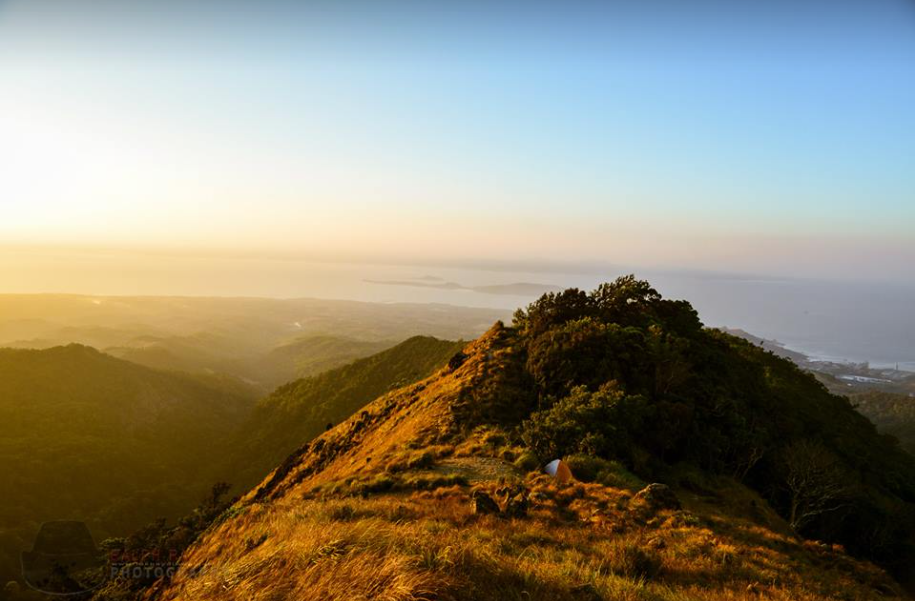
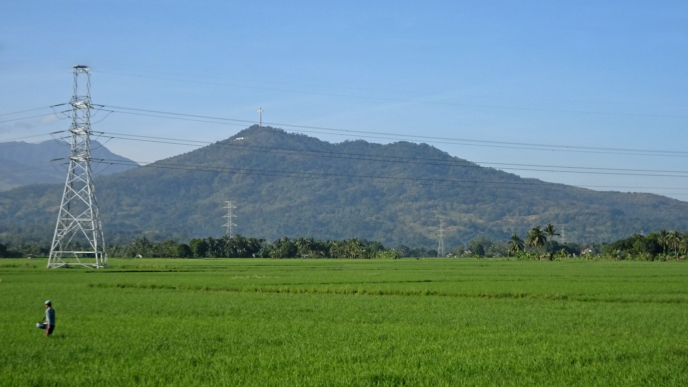
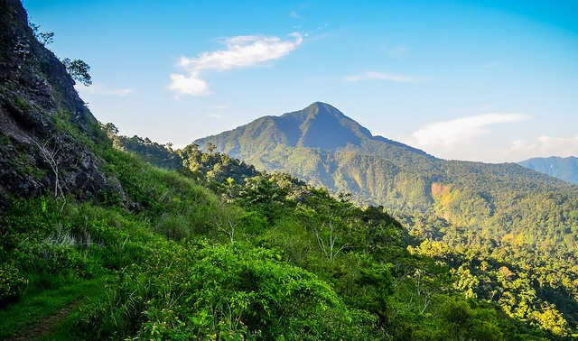

Scenic hikes, historical trails, and panoramic horizons.

Type: Volcano (Highest peak at 1,388m)
Home to the famous Tarak Peak and Pantingan Peak, it offers rugged terrain and rich biodiversity. Perfect for experienced hikers seeking panoramic views of Manila Bay.

Type: Historical Peak
Famous for the Dambana ng Kagitingan (Shrine of Valor). It is a central site for national pilgrimages and historical tours, especially every April 9.

Type: Volcano (1,253m Elevation)
Features a massive caldera and natural hot springs. It is the heart of eco-tourism in Northern Bataan, offering a deep dive into nature exploration.